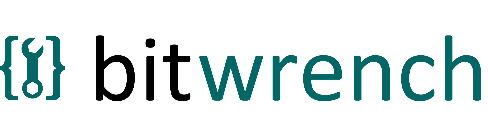

Intro
Bitwrench is a javascript library of miscellaneous functions which used a lot from various web / HTML projects and prototypes.
Its intended purpose is not to replace mature js frameworks like JQuery, Bootstrap, Vue or React but to provide a quick set of helper glue when debugging random projects which may have little to do with web programming. For example if you're debugging an embedded system and just want to dump some data and look at it, or you need to mock up some javascript / HTML tests but don't want to bring in a whole framework that this might be useful for you.
Features
bitwrench functions:
* setting/getting cookies
* a better typeof operator
* pretty printing json
* saving/loading application data files (works in both browser or node)
* getting URL parameters with defaults
* some data manipulation functions and other "random" things (interpolation, clipping, multi-d arrays, random())
* color conversions and interpolation
* HTML quick emits -- create a sortable table from a 2d array, create tabs, create HTML documents declaratively
* logging with dissolve (bw.log, bw.logd, bw.logExport)
* built-in docString support
Bitwrench has no dependancies can be used along side any other framework.
bitwrench.js © 2012- M A Chatterjee